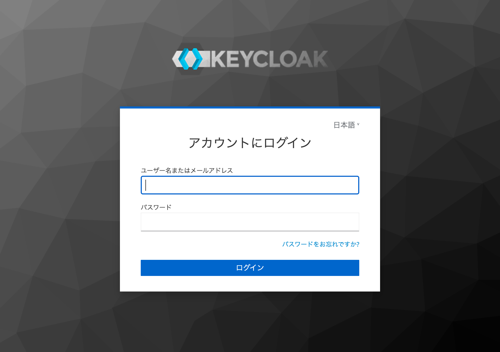
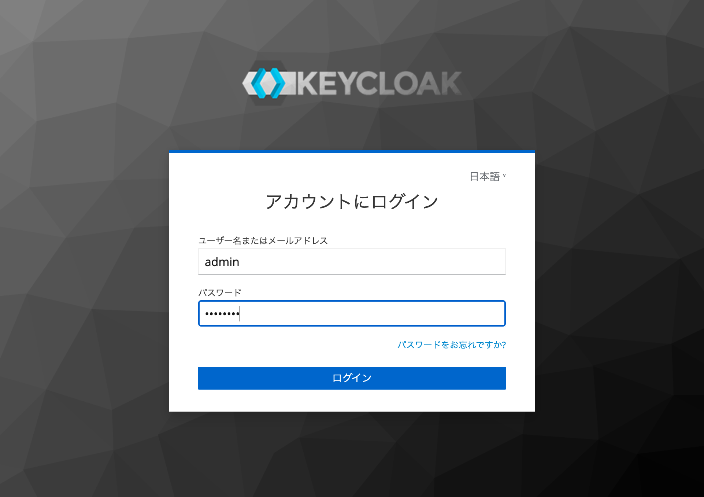
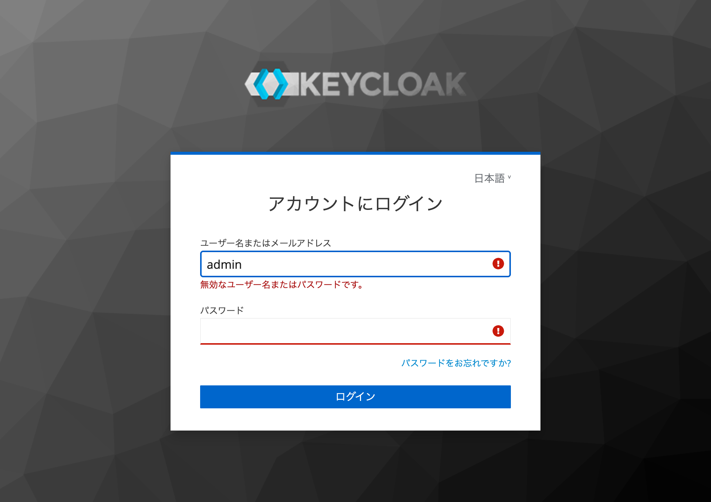
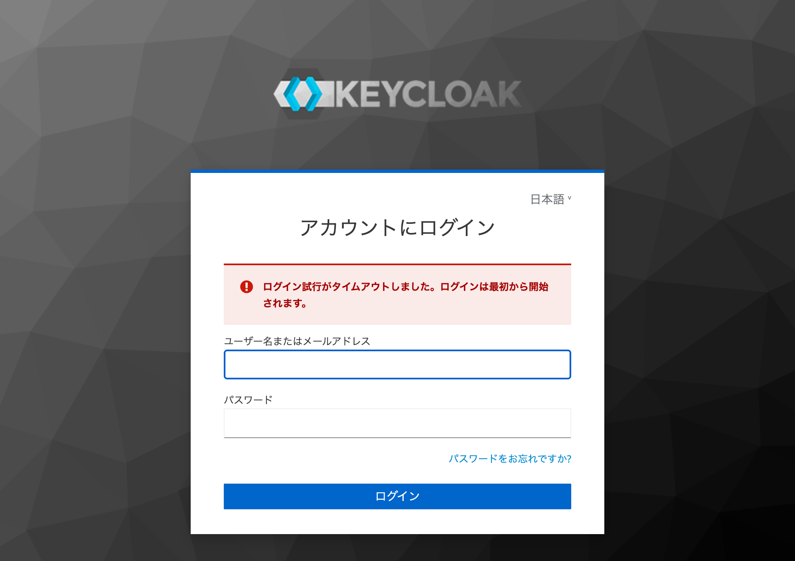
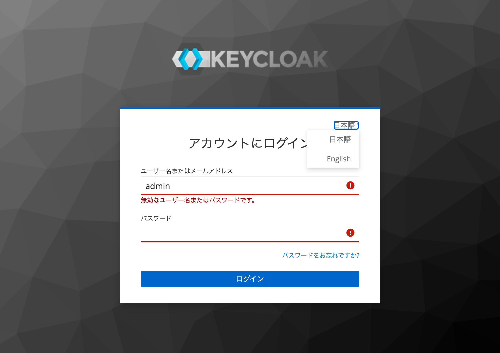
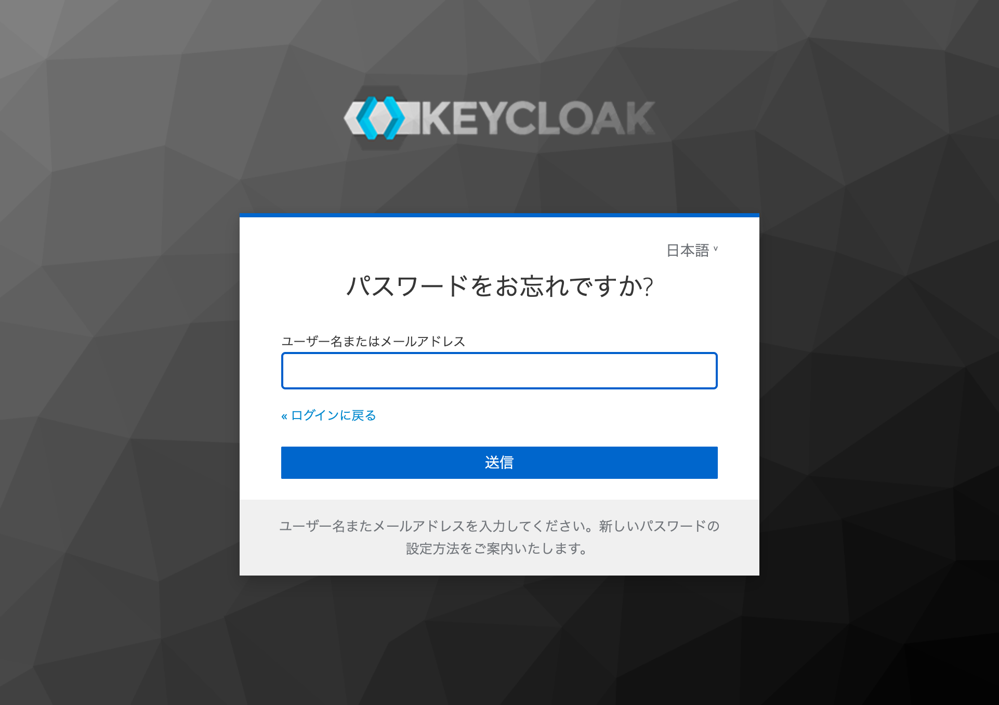

F-01-01: ログイン画面 - UI仕様
最終更新: 2026-05-22 | Phase 3 (画面操作) + Phase 5 (ソースコード補完)
F-01-01-001: ユーザー名入力
基本情報
- 機能ID: F-01-01-001
- 大分類: F-01 認証
- 中分類: F-01-01 ログイン画面
- 小分類: ユーザー名入力
- 画面名: ログイン画面（Keycloak）
- URL: /auth/realms/proquip/protocol/openid-connect/auth?client_id=proquip-web&...
- 対象ロール: 全ロール（未認証ユーザー）
- 関連ユースケース: UC-001（システムにログインして業務を開始する）
- ステータス: specified
画面イメージ
通常利用時の代表的な画面状態。この画面の全体像を把握したうえで、以降の詳細仕様を参照すること。
screenshots/F-01/F-01-01_login_initial_phase3.png

WHAT
Keycloakが提供するログインフォームのユーザー名入力フィールド。ユーザー名またはメールアドレスを入力する。
WHY
OIDC認証フローにおいて、ユーザーを識別するための入力手段を提供する。
表示項目
| 項目名 | 表示条件 | 値の取得元 | 備考 |
|---|
| ラベル「ユーザー名またはメールアドレス」 | 常に表示 | Keycloakテーマ（i18n） | 言語設定により変化（英語: "Username or email"） |
入力項目
| 項目名 | 型 | 必須/任意 | 入力制約 | 初期値 | バリデーション | 備考 |
|---|
| ユーザー名またはメールアドレス |
text（type="text"） |
必須 |
特になし（Keycloak側で検証） |
空文字（ただし認証エラー後はユーザー名が保持される） |
サーバーサイド: Keycloakがユーザー存在チェック。空送信時もサーバーサイドエラー「無効なユーザー名またはパスワードです。」が返る |
初期フォーカスがこのフィールドに設定される |
操作
| 操作名 | トリガー | 実行内容 | 正常時の結果 | 異常時の結果 | 状態変化 |
|---|
| 入力 |
キーボード入力 |
テキストフィールドに値を入力 |
入力値が表示される |
- |
- |
正常系
ユーザー名（例: admin）またはメールアドレスを入力し、パスワードと共にログインボタンを押下すると認証が実行される。
異常系
空のまま送信した場合、サーバーサイドで「無効なユーザー名またはパスワードです。」エラーが表示される。クライアントサイドのHTML5 required属性による検証は無い。
権限制御
未認証ユーザーがアクセス可能。認証済みの場合はこの画面に到達しない（ダッシュボードにリダイレクト）。
状態変化
認証エラー後: ユーザー名フィールドに入力値が保持される（パスワードはクリアされる）。フィールドに invalid="true" 属性が付与される。
関連API
| API ID | method | path | request | response | error response | 根拠 |
|---|
| - |
POST |
/realms/proquip/login-actions/authenticate |
フォームデータ（username, password, session_code等） |
認証成功: OIDCリダイレクト（Authorization Code） |
認証失敗: ログイン画面再表示+エラーメッセージ |
画面操作 |
関連ソース
| ファイルパス | 関数/クラス/メソッド名 | 確認内容 |
|---|
| proquip-frontend/src/app/app.module.ts | initializeKeycloak() | Keycloak初期化設定: onLoad='login-required', realm='proquip', clientId='proquip-web', pkceMethod='S256' |
| proquip-frontend/src/app/core/auth/auth.guard.ts | isAccessAllowed() | 未認証時にKeycloakログインへリダイレクト（リターンURLを保持） |
| proquip/docker/keycloak/proquip-realm.json | - | ブルートフォース保護: 5回失敗で15分ロックアウト |
状態別スクリーンショット
入力状態・エラー・権限差異など、操作や条件によって変化する画面状態を記録する。
撮影条件: 入力済み ／
備考: admin/admin123入力後
screenshots/F-01/F-01-01_login_filled.png

撮影条件: 空送信エラー ／
備考: エラーメッセージ表示
screenshots/F-01/F-01-01_login_empty-submit.png
根拠
- 画面操作: ログイン画面にアクセスしフィールドの存在・ラベル・初期フォーカスを確認
- スクリーンショット: screenshots/F-01/F-01-01_login_initial_phase3.png
- ソースコード: proquip-frontend/src/app/app.module.ts:18-34（Keycloak初期化）
- ソースコード: proquip/docker/keycloak/proquip-realm.json（レルム設定）
confidence
High
未確認事項
- メールアドレスでのログインが実際に機能するか（Keycloak設定では可能だが未テスト）
- ユーザー名の最大長制約（Keycloakデフォルトに依存）
F-01-01-002: パスワード入力
基本情報
- 機能ID: F-01-01-002
- 大分類: F-01 認証
- 中分類: F-01-01 ログイン画面
- 小分類: パスワード入力
- 画面名: ログイン画面（Keycloak）
- URL: /auth/realms/proquip/protocol/openid-connect/auth?client_id=proquip-web&...
- 対象ロール: 全ロール（未認証ユーザー）
- 関連ユースケース: UC-001（システムにログインして業務を開始する）
- ステータス: specified
画面イメージ
通常利用時の代表的な画面状態。この画面の全体像を把握したうえで、以降の詳細仕様を参照すること。
screenshots/F-01/F-01-01_login_initial_phase3.png
WHAT
Keycloakが提供するログインフォームのパスワード入力フィールド。
WHY
OIDC認証フローにおいて、ユーザーの本人確認を行うための秘密情報入力手段を提供する。
表示項目
| 項目名 | 表示条件 | 値の取得元 | 備考 |
|---|
| ラベル「パスワード」 | 常に表示 | Keycloakテーマ（i18n） | 言語設定により変化（英語: "Password"） |
入力項目
| 項目名 | 型 | 必須/任意 | 入力制約 | 初期値 | バリデーション | 備考 |
|---|
| パスワード |
password（type="password"） |
必須 |
特になし（Keycloak側で検証） |
空文字 |
サーバーサイド: Keycloakがパスワード照合。誤入力時「無効なユーザー名またはパスワードです。」 |
入力値はマスク表示（*****）。認証エラー後はパスワードがクリアされる |
操作
| 操作名 | トリガー | 実行内容 | 正常時の結果 | 異常時の結果 | 状態変化 |
|---|
| 入力 |
キーボード入力 |
パスワードフィールドに値を入力（マスク表示） |
マスクされた入力値が表示される |
- |
- |
正常系
正しいパスワードを入力し、ユーザー名と共にログインボタンを押下すると認証成功。
異常系
誤パスワード入力時: 「無効なユーザー名またはパスワードです。」エラーメッセージが表示される。パスワードフィールドはクリアされ、ユーザー名は保持される。ブルートフォース保護により、5回連続失敗で15分間アカウントロック。
権限制御
未認証ユーザーがアクセス可能。
状態変化
認証エラー後: パスワードフィールドがクリアされる。フィールドに invalid="true" 属性が付与される。
関連API
| API ID | method | path | request | response | error response | 根拠 |
|---|
| - |
POST |
/realms/proquip/login-actions/authenticate |
フォームデータ（username, password） |
認証成功: OIDCリダイレクト |
認証失敗: エラーメッセージ付きログイン画面 |
画面操作 |
関連ソース
| ファイルパス | 関数/クラス/メソッド名 | 確認内容 |
|---|
| proquip/docker/keycloak/proquip-realm.json | bruteForceProtected | ブルートフォース保護: failureFactor=5, waitIncrementSeconds=900（15分） |
状態別スクリーンショット
入力状態・エラー・権限差異など、操作や条件によって変化する画面状態を記録する。
撮影条件: 誤パスワード送信 ／
備考: エラーメッセージ表示、ユーザー名保持、パスワードクリア
screenshots/F-01/F-01-01_login_wrong-password.png

根拠
- 画面操作: 誤パスワードで認証エラーメッセージを確認
- スクリーンショット: screenshots/F-01/F-01-01_login_wrong-password.png
- ソースコード: proquip/docker/keycloak/proquip-realm.json:13-19（ブルートフォース保護設定）
confidence
High
未確認事項
- パスワード表示/非表示トグルの有無（Keycloakデフォルトテーマでは無し）
- ブルートフォースロック時の具体的なエラーメッセージ（未テスト）
F-01-01-003: ログインボタン
基本情報
- 機能ID: F-01-01-003
- 大分類: F-01 認証
- 中分類: F-01-01 ログイン画面
- 小分類: ログインボタン
- 画面名: ログイン画面（Keycloak）
- URL: /auth/realms/proquip/protocol/openid-connect/auth?client_id=proquip-web&...
- 対象ロール: 全ロール（未認証ユーザー）
- 関連ユースケース: UC-001（システムにログインして業務を開始する）
- ステータス: specified
画面イメージ
通常利用時の代表的な画面状態。この画面の全体像を把握したうえで、以降の詳細仕様を参照すること。
screenshots/F-01/F-01-01_login_initial_phase3.png
WHAT
ユーザー名とパスワードを送信して認証を実行するボタン。
WHY
入力された認証情報をKeycloakに送信し、OIDC Authorization Code + PKCEフローを完了させる。
表示項目
| 項目名 | 表示条件 | 値の取得元 | 備考 |
|---|
| ボタンラベル「ログイン」 | 常に表示 | Keycloakテーマ（i18n） | 青色背景・白文字。英語: "Sign In" |
入力項目
| 項目名 | 型 | 必須/任意 | 入力制約 | 初期値 | バリデーション | 備考 |
|---|
| 入力項目なし（ボタン要素） |
操作
| 操作名 | トリガー | 実行内容 | 正常時の結果 | 異常時の結果 | 状態変化 |
|---|
| ログイン |
クリック |
フォームデータをKeycloak認証エンドポイントにPOST送信 |
認証成功: Authorization Codeが発行され、フロントエンドにリダイレクト。keycloak-angularがトークン交換（POST /auth/realms/proquip/protocol/openid-connect/token）を実行し、ダッシュボード（/dashboard）に遷移 |
認証失敗: ログイン画面が再表示され、「無効なユーザー名またはパスワードです。」エラーメッセージが表示される。セッションタイムアウト時: 「ログイン試行がタイムアウトしました。ログインは最初から開始されます。」 |
認証成功: Keycloakセッション確立、アクセストークン・リフレッシュトークン発行。認証失敗: ブルートフォースカウンター増加 |
正常系
正しい認証情報でログインボタンを押下すると:
- Keycloakが認証を検証
- Authorization Codeがフロントエンドにリダイレクトで返される
- keycloak-angularがCode→Token交換を実行（POST /auth/realms/proquip/protocol/openid-connect/token）
- アクセストークン（有効期限5分）、リフレッシュトークン、IDトークンが発行される
- AuthServiceがロールを読み込み
- ダッシュボード（/dashboard）にリダイレクト
異常系
- 空送信: 「無効なユーザー名またはパスワードです。」（HTML5クライアントバリデーションなし）
- 誤パスワード: 「無効なユーザー名またはパスワードです。」（ユーザー名保持、パスワードクリア）
- 存在しないユーザー: 「無効なユーザー名またはパスワードです。」（同一メッセージ、ユーザー列挙防止）
- セッションタイムアウト: 「ログイン試行がタイムアウトしました。ログインは最初から開始されます。」（新しいセッションでフォーム再表示）
- アカウントロック: 5回連続失敗で15分間ロック（エラーメッセージ未確認）
権限制御
未認証ユーザーのみ操作可能。認証済みユーザーはこの画面に到達しない。
状態変化
- 認証成功: 未認証→認証済み、Keycloakセッション確立、JWT発行
- 認証失敗: ブルートフォースカウンター+1、フォーム再表示
- タイムアウト: 新しいセッションコードで再開
関連API
| API ID | method | path | request | response | error response | 根拠 |
|---|
| - |
POST |
/realms/proquip/login-actions/authenticate |
username, password, session_code, execution, client_id, tab_id |
302 リダイレクト（Authorization Code付き） |
200 エラーメッセージ付きログイン画面 |
画面操作 |
| - |
POST |
/auth/realms/proquip/protocol/openid-connect/token |
grant_type=authorization_code, code, redirect_uri, code_verifier |
200 { access_token, refresh_token, id_token, ... } |
400 { error, error_description } |
Network確認 |
関連ソース
| ファイルパス | 関数/クラス/メソッド名 | 確認内容 |
|---|
| proquip-frontend/src/app/app.module.ts | initializeKeycloak() | onLoad='login-required', pkceMethod='S256', checkLoginIframe=false |
| proquip-frontend/src/app/core/auth/auth.service.ts | loadUserRoles() | 認証成功後にKeycloakからロール情報を取得・キャッシュ |
| proquip-frontend/src/app/core/interceptors/auth.interceptor.ts | intercept() | 認証成功後、全APIリクエストにBearerトークンを自動付与 |
| proquip-frontend/src/app/core/interceptors/error.interceptor.ts | intercept() | 401応答時にKeycloakログインを再トリガー |
| proquip/docker/keycloak/proquip-realm.json | - | accessTokenLifespan=300（5分）, ssoSessionIdleTimeout=1800（30分）, pkce.code.challenge.method=S256 |
状態別スクリーンショット
入力状態・エラー・権限差異など、操作や条件によって変化する画面状態を記録する。
撮影条件: 入力済み ／
備考: 送信直前の状態
screenshots/F-01/F-01-01_login_filled.png
撮影条件: 空送信エラー ／
備考: バリデーションエラー表示
screenshots/F-01/F-01-01_login_empty-submit.png
撮影条件: 誤パスワード ／
備考: 認証エラー表示
screenshots/F-01/F-01-01_login_wrong-password.png
撮影条件: ログイン成功後 ／
備考: ダッシュボードにリダイレクト
screenshots/F-01/F-01-01_login_success-redirect.png

撮影条件: セッションタイムアウト ／
備考: タイムアウトエラーメッセージ表示
screenshots/F-01/F-01-01_login_timeout-and-lang.png

根拠
- 画面操作: 空送信・誤パスワード・正常ログイン・タイムアウトの各パターンを実行して確認
- スクリーンショット: screenshots/F-01/F-01-01_login_*.png（6枚）
- Network通信: ログイン成功時のトークンエンドポイント呼び出し（POST /auth/realms/proquip/protocol/openid-connect/token → 200）を確認
- ソースコード: proquip-frontend/src/app/app.module.ts:18-34, proquip/docker/keycloak/proquip-realm.json
confidence
High
未確認事項
- ボタンの二重クリック防止機構の有無
- アカウントロック時の具体的なエラーメッセージ
- Keycloakセッションの正確なタイムアウト時間（画面操作では数分程度で発生）
F-01-01-004: 言語切替
基本情報
- 機能ID: F-01-01-004
- 大分類: F-01 認証
- 中分類: F-01-01 ログイン画面
- 小分類: 言語切替
- 画面名: ログイン画面（Keycloak）
- URL: /auth/realms/proquip/protocol/openid-connect/auth?client_id=proquip-web&...
- 対象ロール: 全ロール（未認証ユーザー）
- 関連ユースケース: UC-002（ログイン画面の表示言語を変更する）
- ステータス: specified
画面イメージ
通常利用時の代表的な画面状態。この画面の全体像を把握したうえで、以降の詳細仕様を参照すること。
screenshots/F-01/F-01-01_login_initial_phase3.png
WHAT
Keycloakログイン画面の表示言語を切り替えるドロップダウンリンク。画面右上に配置。
WHY
多言語対応のために、ログイン画面の表示言語をユーザーが選択できるようにする。
表示項目
| 項目名 | 表示条件 | 値の取得元 | 備考 |
|---|
| 現在の言語名「日本語˅」 | 常に表示 | Keycloakロケール設定 | ドロップダウン形式、˅は展開インジケーター |
| 言語選択肢「日本語」「English」 | ドロップダウン展開時 | Keycloak internationalization設定 | 2言語のみ対応 |
入力項目
| 項目名 | 型 | 必須/任意 | 入力制約 | 初期値 | バリデーション | 備考 |
|---|
| 入力項目なし（リンク要素） |
操作
| 操作名 | トリガー | 実行内容 | 正常時の結果 | 異常時の結果 | 状態変化 |
|---|
| ドロップダウン展開 |
「日本語˅」クリック |
言語選択肢のドロップダウンを表示 |
「日本語」「English」の選択肢が表示される |
- |
ドロップダウン開閉状態の変化 |
| 言語切替 |
言語選択肢クリック |
kc_localeパラメータ付きでページを再読み込み |
ログイン画面の全テキストが選択言語で表示される |
セッションタイムアウトの場合あり |
画面の表示言語が変更される |
正常系
「日本語˅」をクリックするとドロップダウンが展開され、「日本語」「English」の選択肢が表示される。言語を選択すると、kc_localeパラメータ付きURLにリダイレクトされ、画面全体のテキストが選択言語で再表示される。
異常系
言語切替時にセッションがタイムアウトしている場合、「ログイン試行がタイムアウトしました。ログインは最初から開始されます。」が表示される（言語は切り替わらない場合がある）。
権限制御
未認証ユーザーが操作可能。
状態変化
選択された言語がKeycloakセッションに保存され、以降の画面表示に反映される。
関連API
| API ID | method | path | request | response | error response | 根拠 |
|---|
| - |
GET |
/realms/proquip/login-actions/authenticate?...&kc_locale=en |
kc_localeパラメータ（ja / en） |
選択言語でのログイン画面 |
セッションタイムアウト時: エラーメッセージ付き画面 |
画面操作 |
関連ソース
| ファイルパス | 関数/クラス/メソッド名 | 確認内容 |
|---|
| proquip/docker/keycloak/proquip-realm.json | - | レルム設定に言語設定が含まれる（Keycloakデフォルト機能） |
状態別スクリーンショット
入力状態・エラー・権限差異など、操作や条件によって変化する画面状態を記録する。
撮影条件: ドロップダウン展開時 ／
備考: 日本語・Englishの選択肢表示
screenshots/F-01/F-01-01_login_lang-dropdown.png

根拠
- 画面操作: ドロップダウンをクリックし、言語選択肢（日本語、English）を確認
- スクリーンショット: screenshots/F-01/F-01-01_login_lang-dropdown.png
- 画面操作: 言語切替URLのkc_localeパラメータを確認（ja / en）
confidence
High
未確認事項
- English選択時の画面表示（セッションタイムアウトにより未確認）
- 言語設定がログイン後のアプリケーション画面にも反映されるか
- ブラウザの言語設定との連携有無
F-01-01-005: パスワードリセットリンク
基本情報
- 機能ID: F-01-01-005
- 大分類: F-01 認証
- 中分類: F-01-01 ログイン画面
- 小分類: パスワードリセットリンク
- 画面名: ログイン画面（Keycloak）
- URL: /auth/realms/proquip/protocol/openid-connect/auth?client_id=proquip-web&...
- 対象ロール: 全ロール（未認証ユーザー）
- 関連ユースケース: UC-003（パスワードを自助リセットする）
- ステータス: specified
画面イメージ
通常利用時の代表的な画面状態。この画面の全体像を把握したうえで、以降の詳細仕様を参照すること。
screenshots/F-01/F-01-01_login_initial_phase3.png
WHAT
ログイン画面からパスワードリセット画面（F-01-02-001）へ遷移するリンク。パスワード入力フィールドの下に配置。
WHY
パスワードを忘れたユーザーが、自助でパスワードをリセットできる手段を提供する。
表示項目
| 項目名 | 表示条件 | 値の取得元 | 備考 |
|---|
| リンクテキスト「パスワードをお忘れですか?」 | 常に表示 | Keycloakテーマ（i18n） | 右寄せ表示、青文字 |
入力項目
| 項目名 | 型 | 必須/任意 | 入力制約 | 初期値 | バリデーション | 備考 |
|---|
| 入力項目なし（リンク要素） |
操作
| 操作名 | トリガー | 実行内容 | 正常時の結果 | 異常時の結果 | 状態変化 |
|---|
| パスワードリセット画面遷移 |
クリック |
/realms/proquip/login-actions/reset-credentials に遷移 |
パスワードリセット画面（F-01-02-001）が表示される |
セッションタイムアウト時: タイムアウトエラー表示 |
画面遷移 |
正常系
「パスワードをお忘れですか?」をクリックすると、パスワードリセット画面に遷移する。遷移先ではユーザー名またはメールアドレスの入力フィールド、「送信」ボタン、「« ログインに戻る」リンクが表示される。
異常系
セッションタイムアウト時にクリックした場合、タイムアウトエラーが表示される。
権限制御
未認証ユーザーが操作可能。
状態変化
ログイン画面からパスワードリセット画面に遷移する。
関連API
| API ID | method | path | request | response | error response | 根拠 |
|---|
| - |
GET |
/realms/proquip/login-actions/reset-credentials?client_id=proquip-web&tab_id=... |
- |
パスワードリセット画面HTML |
- |
画面操作 |
関連ソース
| ファイルパス | 関数/クラス/メソッド名 | 確認内容 |
|---|
| Keycloakデフォルトテーマの機能。カスタムソースなし。 |
状態別スクリーンショット
入力状態・エラー・権限差異など、操作や条件によって変化する画面状態を記録する。
撮影条件: 遷移先画面 ／
備考: パスワードリセット画面の表示確認
screenshots/F-01/F-01-02_password-reset_initial.png

根拠
- 画面操作: リンクをクリックしパスワードリセット画面への遷移を確認
- スクリーンショット: screenshots/F-01/F-01-02_password-reset_initial.png
confidence
High
未確認事項
- パスワードリセットメールの送信設定（SMTP設定がKeycloakに設定されているか）
- パスワードリセット完了後のフロー